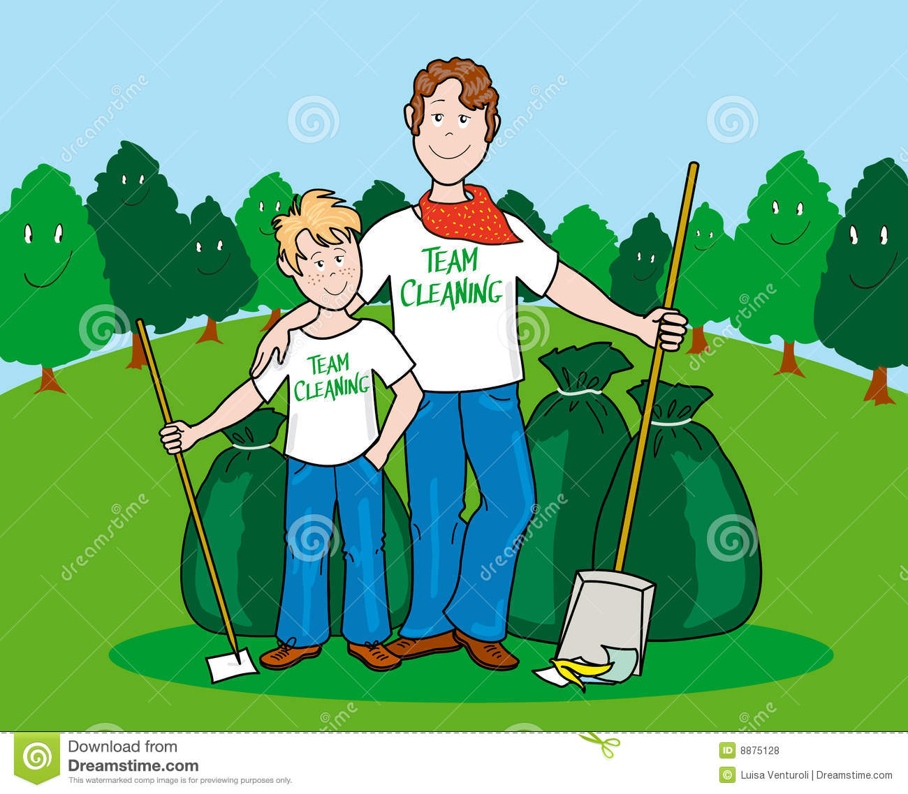
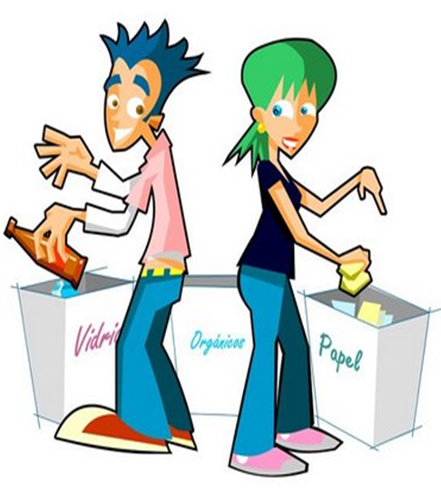
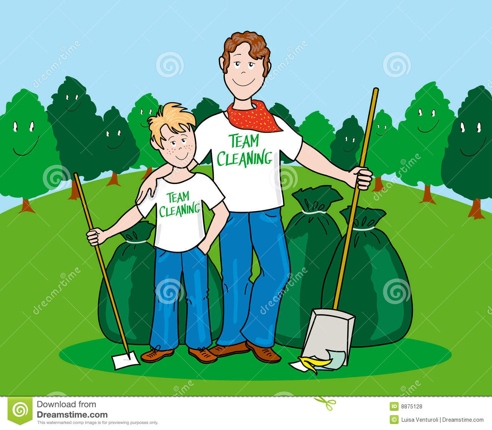
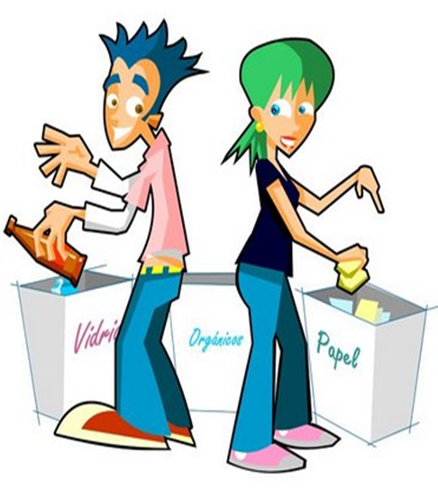

|
Simple and Inexpensive Actions to Reduce Global Warming |
Behavioral change and personal action —in addition to responsible policymaking and technological innovation— are critical to any successful effort to curb greenhouse gas pollution and avoid the worst impacts of climate change.All of the recommendations offeered are cost-effective and ready to be adopted. They are simple and significant steps we can take to help protect our own health,our communities, and the planet.
| RECOMMENDED ACTION | SECTOR | EMISSIONS REDUCTION IN 2020 |
|---|---|---|
| Carpool twice or relecommute once to work every week | Transportion | 75 |
| Fly once less per year: One fewer roundtrip domestic flight for those who travel more than three times per year |
Transportion | 55 |
| Maintain vehicle property: Use recommended oil grade, remove 100 pounds excess weight, keep engine tuned and tires inflated |
Transportion | 45 |
| Reduce motor vehicle idling: Decrease idling duration by 50% |
Transportion | 40 |
| Upgrade less frequently;when upgrading choose EnergyStar; use dryer sparingly: Extend life of personal computer by 50%, upgrade to EnergyStar refrigerator and dishwasher when replacement is nessary, hang-dry clothes rather than using a clothes dryer in the summer |
Household Energy | 115 |
| Attend speedily to leaks and heat loss in the home: Caulking, weatherstripping, attic insulation |
Household Energy | 85 |
| Use programmable thermostat and recommended temperature settings while at home and when away | Household Energy | 80 |
| Reduce idle, or phantom, electricity use: Unplug shut off unused electronics more often, unplug extra refrigerator, set computer to hibernate, turn off unneeded lights |
Household Energy | 70 |
| Use hot water more efficiently: Wash clothes in cold water, lower temperature settings of heater and wrap heater with insulation, use efficient faucets and showerhead |
Househols Energy | 65 |
| Replace incandescent bulbs with CFLs: Six interior and one exterior bulbs per household |
Household Energy | 30 |
| Consume less red meat and dairy Eat poultry in place of red meat and consume plant-based foods rather than dairy two days per week. |
Food | 105 |
| Waste less food: Reduce consumer food waste by 25% |
Food | 65 |
| Recycle whenever possible Increase rates of recycling on paper, and metals by 50% |
Consumption and Recycling |
60 |
| Consume paper and plastics more responsibly: Print double-side,buy recycled products, reduce catalog subscriptions, buy less bottled water. |
Consumption and Recycling |
60 |
| 1,000 |
 


